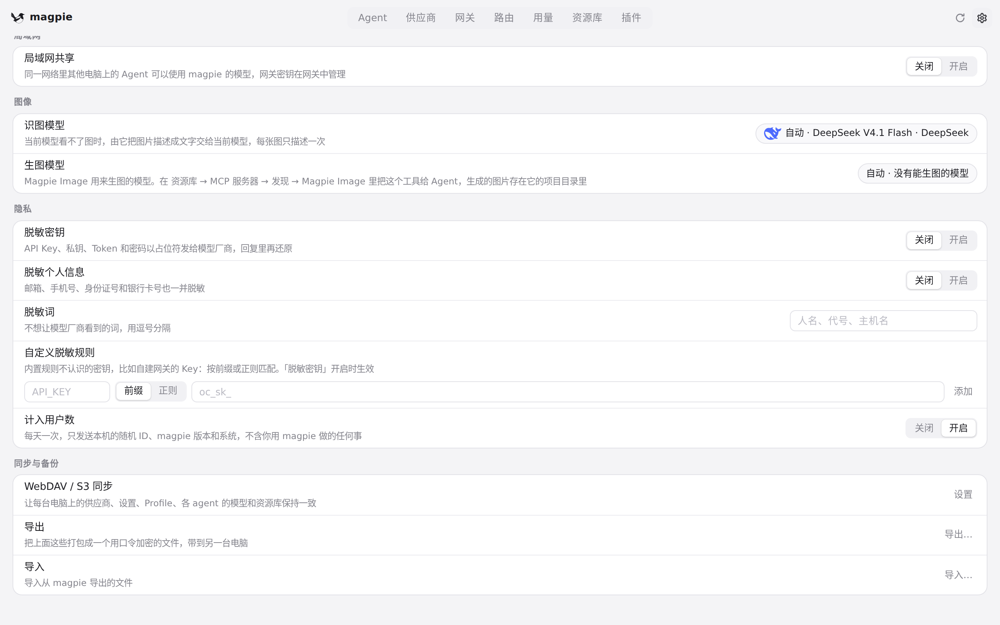
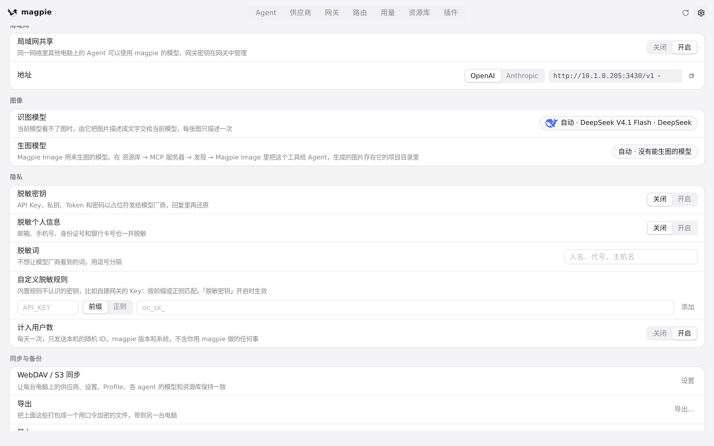
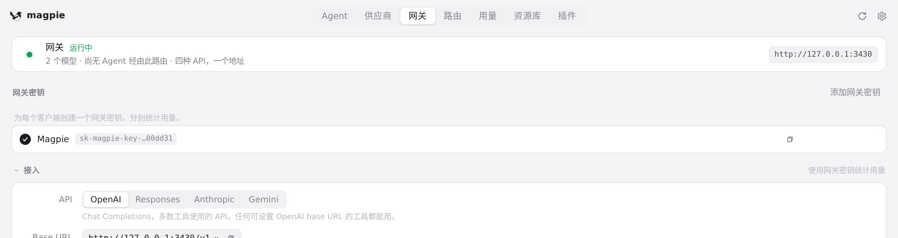
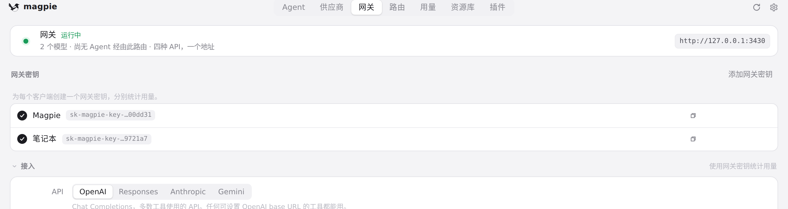
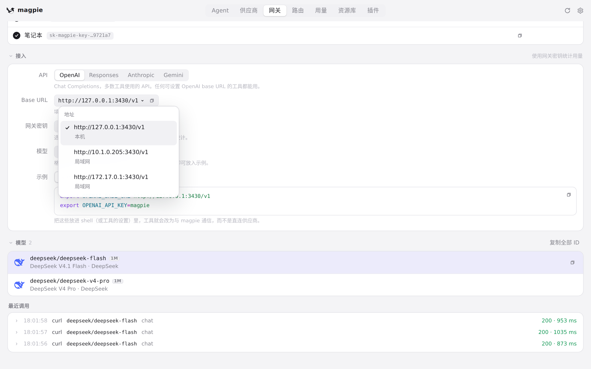
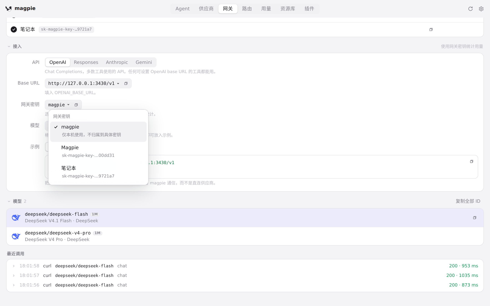
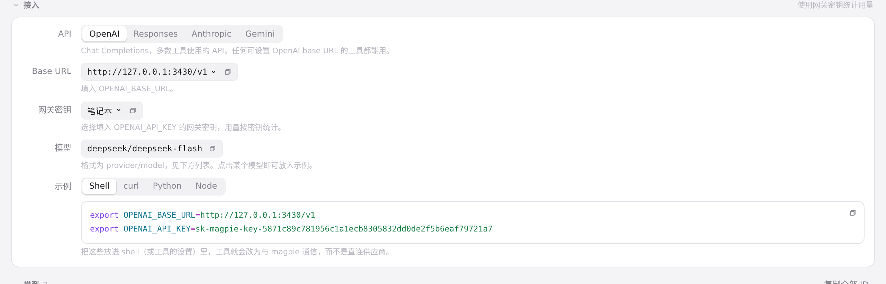
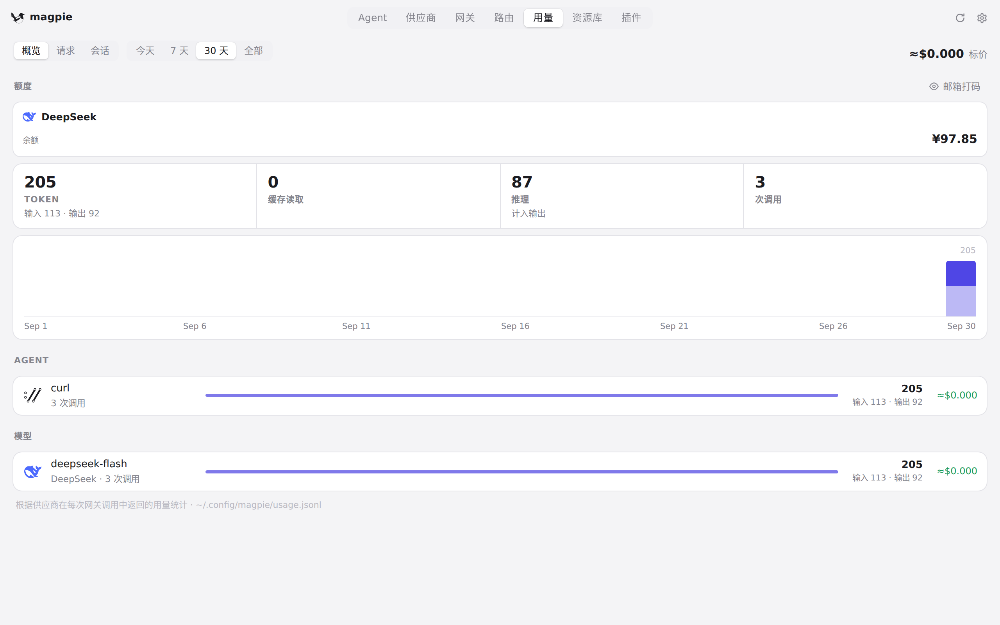
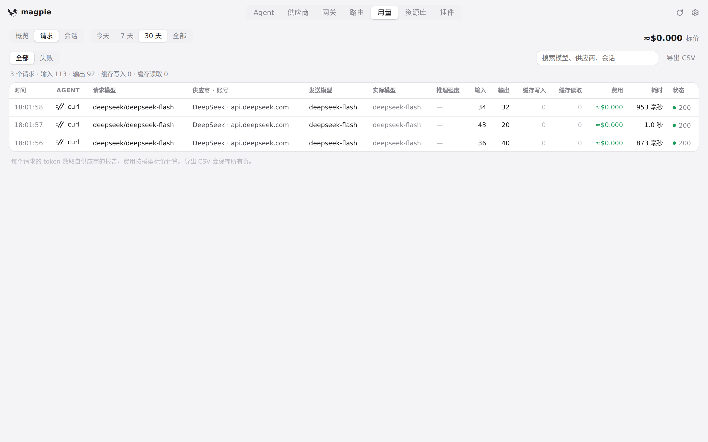

#344 界面预览
commit 1c2ac1c · 回到 PR · 网关页新增「网关密钥」区块（为每个客户端创建、复制、重命名、启停、轮换、移除命名密钥），接入区可按本机/局域网地址和已启用密钥生成带密钥的示例；用量 › 概览新增按网关密钥的分组，用量 › 请求新增密钥筛选；设置页的局域网部分去掉了重复的 API key 行，只保留开关与地址。
红线是鼠标走过的轨迹，红色圆环是一次点击；底部文字是这一步在做什么。空格暂停，← → 逐段查看。

开启局域网共享后网关出现密钥区块 · 设置 › 局域网：共享开关与说明

开启局域网共享后网关出现密钥区块 · 开启共享后的局域网设置

开启局域网共享后网关出现密钥区块 · 网关页的网关密钥区块

新建网关密钥并在接入中选用 · 网关密钥列表

新建网关密钥并在接入中选用 · 接入：地址下拉

新建网关密钥并在接入中选用 · 接入：网关密钥下拉

新建网关密钥并在接入中选用 · 接入：示例中使用的密钥

用量页的按密钥分组与筛选入口 · 用量 › 概览

用量页的按密钥分组与筛选入口 · 用量 › 请求的筛选行